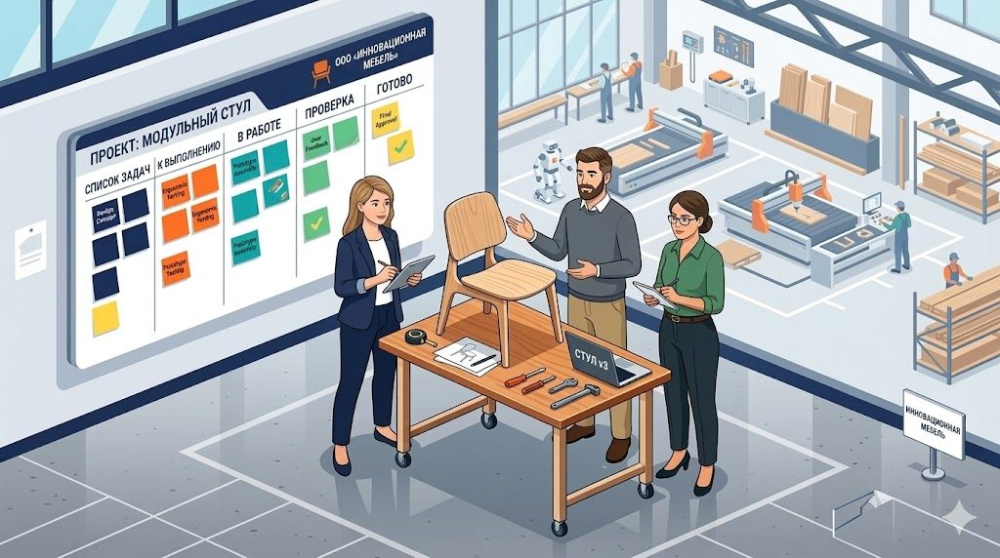

Когда рынок начинает быстро меняться, многие мебельные компании пытаются выжить привычными методами: усилить контроль, проводить больше совещаний, требовать больше отчетов и чаще произносить фразу: «Надо всем собраться и поработать как одна команда».
Звучит правильно, но работает часто так себе, потому что в период больших изменений компанию губит не только нехватка идей. Ее губит неспособность быстро превратить важную задачу в отдельный управляемый проект - спринт.
В итоге все всё понимают, но ничего толком не происходит. Да, все согласны, что надо:
- сокращать сроки;
- улучшать экономику;
- перестраивать ассортимент;
- разбираться с маркетплейсами;
- наводить порядок в сервисе;
- повышать повторные продажи.
Но это «надо» обычно бесследно растворяется в операционке:
- отдел продаж продолжает звонить,
- производство тушит пожары,
- маркетинг публикует посты и баннеры,
- собственник пытается героически соединять несоединимое.

Именно в такие моменты полезно взять одну важную методику из мира стартапов.
Что именно стоит взять у IT и стартапов
Один из сильных принципов, который часто встречается в быстрых и эффективных компаниях, выглядит так: небольшие команды по 3–4 человека работают над отдельными важными проектами, причем все эти проекты синхронизированы с общей целью компании.
Но здесь есть принципиальная поправка для работающего мебельного бизнеса. Никто не требует от сотрудников бросить текучку и превратиться в «чистый стартап». Это было бы слишком красиво для презентации и слишком опасно для реальной фабрики, в реальной мебельной компании все гораздо прозаичнее и потому ценнее - это элементы матричного управления:
Сотрудники продолжают выполнять свои основные обязанности, но параллельно входят в маленькие проектные команды, каждая из которых отвечает за отдельное направление изменений.
То есть это не замена оргструктуры, а второй слой управления - поверх текущей деятельности. И вот такой подход в период турбулентности часто оказывается намного полезнее, чем бесконечные попытки «ускорить всех сразу».
Колодцевая болезнь: почему привычная структура отделов больше не работает
В стабильные времена классическая структура еще как-то справляется: есть отдел продаж, производство, снабжение, маркетинг, сервис ( не у всех, но бывает :-). И вот у каждого свой участок, свои KPI, свои заботы.
Но когда рынок резко меняется, выясняется неприятная вещь: важные изменения почти никогда не помещаются в рамки одного отдела.
Например:
- улучшение экономики маркетплейсов - это не только вопрос менеджера по площадкам;
- сокращение цикла заказа это не только вопрос производства;
- рост повторных продаж - это не только вопрос маркетинга;
- оздоровление ассортимента - это не только вопрос коммерческого директора;
- снижение рекламаций - это не только вопрос сервиса.
Почти каждая серьезная задача упирается сразу в несколько функций. А в функциональной модели (той самой «колодцевой структуре», где каждый сидит на дне своего отдела) такие задачи обычно погибают в трех местах:
1. У них нет единого хозяина.
2. Каждый решает только свой кусок.
3. Операционка стабильно съедает все внимание.
Поэтому компания вроде бы и обсуждает важные изменения, но фактически продолжает жить старой моделью.
Что дает маленькая проектная команда
Маленькая команда - это способ вытащить важную тему из болота «общей ответственности». Ведь когда в проекте 3–4 человека, становится кристально понятно:
- кто реально двигает тему;
- кто нужен для принятия решений;
- где проект застрял;
- что делается на этой неделе, а не в «светлом будущем после сезона».
Особенно важно, что такая команда собирается не вокруг отдела, а вокруг результата. Например, не «представители подразделений поработают над вопросом», а:
- команда проекта «Сокращение цикла от лида до монтажа на 20%»;
- команда проекта «Сделать маркетплейсы управляемо прибыльными».
Это совсем другой уровень постановки задачи. В первом случае будет еще одна папка с протоколами а во втором есть шанс на реальное изменение.
Ключевой момент: это не освобождение от основной работы
В большинстве мебельных компаний невозможно просто взять сильных сотрудников и сказать: «Теперь вы стартап-юнит, забудьте обо всем остальном». Производство от этого не станет ждать, клиенты тоже, да и заказы, закупки, монтажи и претензии не исчезнут от одного прикосновения модной методологии.
Поэтому правильнее говорить так: маленькие проектные команды в мебельной компании - это не отдельные штатные единицы, а временные кросс-функциональные связки из действующих сотрудников, которые помимо своей основной роли ведут конкретный проект изменений.
Да, такой подход сложнее, чем в теории, но это и есть взрослая управленческая практика, а не стартап-фантазия в худи.
Такая модель требует сделать три вещи:
1. Выбрать действительно немного проектов.
2. Ограничить состав каждой команды.
3. Дать ей понятный приоритет и право на часть времени участников.
Без этого все закончится любимым корпоративным жанром: «Делайте стратегический проект, но только не в ущерб всему остальному, и желательно без времени, ресурсов и права кому-то мешать», то есть красиво похороните идею сразу, чтобы потом не мучиться.
Что такое «Полярная звезда» для мебельной компании
Чтобы маленькие команды не превратились в кружки по интересам, им нужна общая логика. У стартапов это часто называют North Star Metric - «Полярная звезда».
Проще говоря, это главная цель, относительно которой проверяются все проекты. Для мебельной компании она должна быть не лозунгом, а рабочим ориентиром. Например:
- повысить операционную маржинальность компании;
- сократить цикл исполнения заказа;
- сделать маркетплейсы не просто каналом оборота, а каналом прибыли;
- увеличить долю повторных и рекомендательных продаж;
- перейти от хаотичного ассортимента к управляемой матрице.
Важно, чтобы проектные команды работали не просто над «интересными темами», а над темами, которые двигают именно эту общую цель. Иначе одна команда будет улучшать упаковку, а вторая рисовать новый шаблон презентации, третья же обсуждать бренд-платформу, а бизнес тем временем продолжит терять деньги с очень креативным выражением лица.
Какие проектные команды могут быть у мебельной компании
Вот где этот подход особенно полезен.
1. Команда «Экономика маркетплейсов»
Участники продолжают делать свою основную работу, но раз в неделю собираются на короткий Agile-спринт и ведут задачи на Канбан-доске (например, в Trello или Битриксе).
- Состав: менеджер маркетплейсов, аналитик или коммерсант, сотрудник из контента, представитель производства/логистики.
- Цель: не просто «вести площадки», а выстроить модель, при которой компания понимает: на чем зарабатывает, где теряет маржу, какие SKU надо развивать, а какие размеры, упаковка, логистика и цены убивают экономику.
2. Команда «Сокращение цикла заказа»
- Состав: руководитель продаж, технолог или производственник, человек из сервиса, аналитик.
- Цель: разобрать путь клиента и заказа от первого касания до монтажа и убрать системные потери времени. Это очень типичная тема, которая никогда не решается силами одного отдела, потому что каждый видит только свой кусок слона.
3. Команда «Ассортимент без хаоса»
- Состав: коммерческий руководитель, аналитик, закупщик или продакт, маркетолог.
- Цель: перестать жить в режиме «пусть будет побольше всего». Сформировать жесткий бэклог (список приоритетов) и разобрать ассортимент на предмет маржинальности, спроса, сложности производства и каннибализации.
4. Команда «Сарафан и повторные продажи»
- Состав: маркетинг, сервис, CRM/аналитика, руководитель продаж.
- Цель: построить систему, при которой клиент после покупки не исчезает в тумане вместе со своим шкафом, а становится источником следующей выручки (повтора, рекомендации, отзыва, кейса).
Почему команда должна быть именно маленькой
Потому что большая проектная команда очень быстро начинает вести себя как обычный комитет, а комитет - это устройство, прекрасно приспособленное к двум вещам: размазывать ответственность и производить ощущение работы.
Когда в проекте 3–4 человека, уже сложно спрятаться за коллективным туманом. Там становится видно, кто двигает, кто тормозит, кто нужен, а кто просто приходит на встречи, чтобы не отвыкнуть от стула.
Где здесь главная управленческая ловушка
Самая частая ошибка - это назначить такие команды, но ничего реально не изменить в режиме управления. То есть на словах сказать: «Теперь у нас проектный подход». А по факту:
- не выделить приоритет;
- не закрепить владельца проекта;
- не согласовать время;
- не снять часть второстепенной нагрузки;
- не ввести короткий ритм отчетности;
- не связать проект с цифрами.
Тогда получится не проектная команда, а дополнительное наказание для хороших сотрудников. Они и так загружены, а теперь еще будут по вечерам «развивать компанию».
Как внедрять это в реальной мебельной компании
Сначала компания определяет 3–5 действительно критичных направлений изменений, а не пятнадцать и не «все важное», и именно несколько тем, которые реально определяют будущее.
Потом под каждую тему собирается маленькая команда из действующих сотрудников. При этом люди не уходят из своих ролей, но получают вторую рамку ответственности - проектную, и главное - это должно быть официально признано, что эта работа тоже работа, а не факультатив между пожарами. Например, можно закрепить, что участники проекта тратят на него 10–20% рабочего времени. Не абстрактно, а реально. Иначе проектная команда будет существовать только в презентации, а в реальности будет только в чувстве вины.
Вывод
Мебельной компании в турбулентный период не обязательно копировать стартапы целиком. Но одну вещь у них точно стоит взять: важные изменения нужно собирать в маленькие кросс-функциональные команды, работающие поверх текущей структуры.
Это не ломает оргструктуру и не превращает фабрику в модный акселератор, это просто позволяет компании не ждать, пока «все как-нибудь само перестроится». Выигрывают не те компании, у которых больше правильных мыслей, а те, у которых мысли быстрее превращаются в ограниченное число сильных проектов.